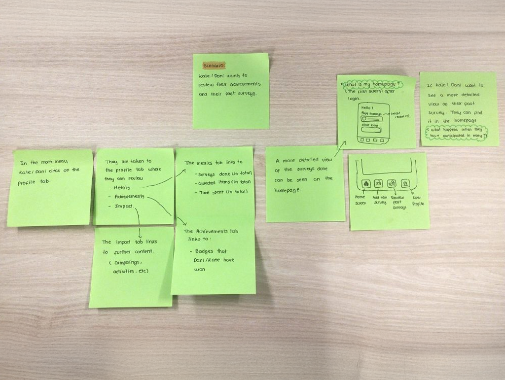

Debris Lore
Year: 2024
Type: Digital Service Design
Core Skills:
Research Design Wireframing Prototyping Machine LearningAwards:
Creative Computing Institute - Extended Interface Award Winner 2024
Global Creative Showcase Shortlisted - Service Design 2024
Project Overview
Debris Lore is a smartphone app that uses machine learning and computer vision technologies to register and document the quantity and types of rubbish found on beaches. This app runs an object detection model using smartphone hardware to assist researchers and volunteers in classifying different types of waste during beach cleanup campaigns in citizen science-led projects.
The Problem
Despite various government commitments, 53 million metric tonnes of waste are predicted to enter our aquatic ecosystems by 2030 (Borrelle et al., 2020). Therefore, it is imperative to understand the threats that pollution poses to marine and coastal ecosystems, as well as to our own health.
By enhancing the current marine litter monitoring programmes’ methodologies and understanding the value of data collection on waste, Debris Lore aims to support the efficient and effective collection of this data. This data can later be used to inform policies, legislation, and the development of sustainability action plans.

Research
Plástico Precioso Uramba | Citizen science project in Colombia
Precious Plastic is a worldwide open-source project that empowers local small-scale recycling communities. The aim is to re-purpose plastic that would otherwise go to landfill, or worse, to the ocean. Plástico Precioso Uramba, Colombia, adopts this model and augments it through citizen science research, in which volunteers, local and non-locals, come together to clean the beaches, learn about plastics, and transform the material. I took part in one of their annual workshops, where we went to the beach to collect different types of plastics that we would later convert into new material.
Their fantastic team were key in understanding the viability of a tool like Debris Lore. In a remote area such as Bahía Málaga, issues like accessibility to technology and Internet networks are a reality. Yet, the community and volunteers manage to collect valuable data whilst fostering a deeper sense of responsibility towards waste. Therefore, Debris Lore is born to support those existing citizen-led projects and seeks to increase their impact through their own data.

The role of technology
Whilst technology has been advancing to support scientists and researchers in collecting valid data on waste, it has mainly remained in technical hands. Recently, mobile apps have been developed to explore the power of collecting data through volunteer efforts, minimising the gap between technical and non-technical users. However, these apps rely on lengthy category lists and input boxes, making them inevitably prone to human error when classifying different types of waste.

Development
Exploring different technologies and narratives
The development of the app started with the idea of using AR (Augmented Reality) or MR (Mixed Reality) technologies to offer the user a hands-free experience. After going through a beach cleanup myself, it was clear that the use of the hands was key to collect waste. I explored the possibility of using the Microsoft HoloLens to implement an information overlay that allowed the localization and classification of plastic by types.
However due to constraints in the headset itself, and its low price accessibility, I started to design for smartphone hardware.
The users
Understanding my end-user was key to planning and prioritizing the design of features. The user research of this project consists of a combination of ‘assumption personas’ and ‘data driven personas’ supported by third-party open research resources (mainly digital surveys). This project has identified two user groups: Citizen Volunteers (Kate) and Researchers (Dani), both concerned with marine litter debris and its effects in the ocean.


Scenarios
After identifying the user (who), the issues that they are facing (what), and possible solutions to those issues (how), the creation of scenarios helps to bring all of those elements under a specific situation. Two scenarios were mapped focusing on two key stages of the app, the first one is concerned with collecting information during a beach litter survey, while the second focuses on the aftermath of the survey and what can be done after the collected data has been submitted.
Scenario 1
Kate and Dani are participating in a beach survey/ cleaning event. A new app to collect field information is introduced. They are about to have their first interaction with the product.
Scenario 2
Kate and Dani have already used the app to collect their survey information. Now, they want to review their achievements and their past surveys
Flowchart
The purpose of the flowchart is to understand the overall user journey and guide the code structure of the app. By identifying main screens and interactions, I was able to start thinking programmatically and roughly understand the components and the file structure that make up the app. This flow chart came in handy when I needed to create the routing of the app and the different navigations during the code development.
View flowchart
Developing the Front-End
Brand guidelines
The design process of this project can be covered under two major sections: User Interface (front-end) and Technical Architecture (back-end)The design process of this project can be covered under two major sections: User Interface (front-end) and Technical Architecture (back-end). During the front-end development of the app I created a brand style guidelines.
Wireframes
The wireframe was crafted with the user personas in mind and tries to implement the functionalities that had been identified as solutions to the distinct pain points (identified during the creation of the scenarios). The wireframe describes the main screens in which the app is divided and they can be identified as:
- Login screen and onboarding to the app
- Home Screen
- Start survey Screen
- My surveys Screen
- My Profile Screen
UI Elements
Making use of the brand guidelines, the app demonstrates uniformity across its different screens. CTA’s use a clear style and provide enough space to be clickable, while input forms across screens also present a uniform style. Defining these visual elements was key to identifying components that repeat, such as fonts, colours, spacing, etc; allowing the creation of a Global styling file in React Native. This is very powerful because it enables the styling of components present in different screens using a single styling constant.
Screens: interaction and functionality
The app’s most important screens are the ‘Start survey’ and ‘Live survey’. These two interactions carry the main functionality of the app, which is to collect the details of a beach cleanup and then open the phone’s camera which will run an object recognition model on the images it captures. The ‘Start survey’ screen presents the user with a form that needs to be completed before starting a session, replacing the use of the traditional physical data card. After completing this, the user will be requested to grant access to the camera, and the ‘Live Survey’ screen will come up. In this screen, the user is presented with a live view of their surroundings, a button to capture images, and a brief of the elements they have found.

Developing the Back-End
Machine Learning for mobile devices
Machine learning for mobile phones is constrained to the devices’ hardware capabilities, primarily computational power, restricted memory and storage, and energy efficiency. Therefore, to be able to deploy an object detection model on a mobile device, TensorFlow Lite is used to optimize and reduce the size of the model used in the project.
Application Architecture Diagram
The following diagram aims to show the app’s ‘Live survey screen’ software functioning. Offering a wider view of the working between the interface and the underlying processes of the app. In this diagram we see the process of a user opening the camera(1), triggering the object detection model(2) which will then process each frame from the camera(3). The frames then go through the object detection model(4), and the user finally gets some visual feedback (UI) such as the number and kind of elements found(5). This process can be repeated and finishes when the user presses the ‘Finish Survey’ button, which will log all the findings of the session.
Object Detection Model definition and testing
Using the Tensorflow API, I fine-tuned the SSD MobileNet model and trained several variations with batch sizes and step quantities. These models were trained on a dataset I manually labelled, including the bounding boxes, focusing on two classes: 'Plastic Bottle' and 'Cardboard'. After training the model on different steps and batch sizes, I stayed with a version trained on 15,000 steps, which seemed to get a good percentage of accurate predictions. However, to improve the model’s confidence there’s still some more training and fine-tuning left to do.
Outcome
The outcome of this project is an application developed on React Native, written on JavaScript and TypeScript, capable of opening the camera of the user’s phone and then running a TensorFlow Lite object detection model to capture the number and the name of the objects within the field of view.
The app also counts with other key sections such as the ‘survey details form’, where important information can be filled in by beach survey participants before starting the ‘live survey’; and a profile section, where users are shown their achievements and the impact they have with their participation on beach surveys.
Creative Computing Summer Festival
I had the opportunity to exhibit my work at The Hub Gallery in South London. For this exhibition, I created a space that attempted to transport the viewer to a beach affected by rubbish, while giving a live demo of how the app works. This was a storytelling piece in which I shared the experience I had whilst doing a beach cleanup, and how this inspired the development of Debris Lore.
The installation had really good responses, and users seemed excited to see this project being further developed. I had the opportunity to exhibit my work at The Hub Gallery in South London. For this exhibition, I created a space that attempted to transport the viewer to a beach affected by rubbish, while giving a live demo of how the app works.
Reflection
This project is just scratching the surface of what could be a polished product for marine litter monitoring powered by volunteers. The next steps for this project to be further developed involve the creation of a more robust user journey, including improving the detection model accuracy and building a database where key data can be stored. User testing would also be a key stage for the app to evolve and improve the current interactions.
Finally, this project has been a great experience to learn about project management techniques, prioritization and agile methodology. It also helped me to expand my knowledge in app development, machine learning, computer vision, and user-centered design.

{kind=link}
{kind=link}
{kind=link}
{kind=link}
{kind=link}
{kind=link}
{kind=link}
{kind=link}
{kind=link}
{kind=link}
{kind=link}
{kind=link}
{kind=link}
{kind=link}
{kind=link}
{kind=link}
{kind=link}
{kind=link}
{kind=link}
{kind=link}
{kind=link}
{kind=link}
{kind=link}